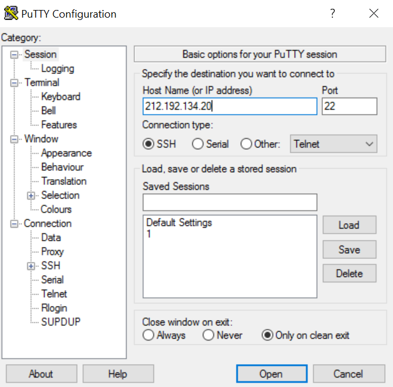
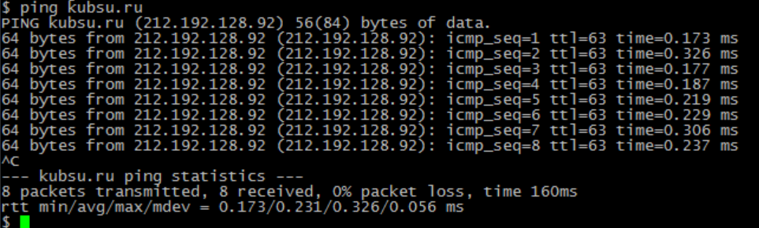
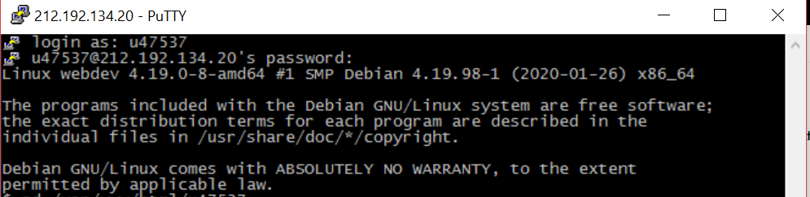
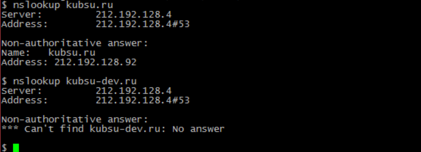
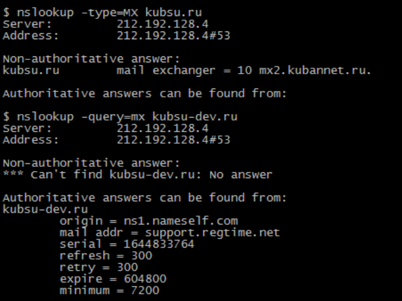
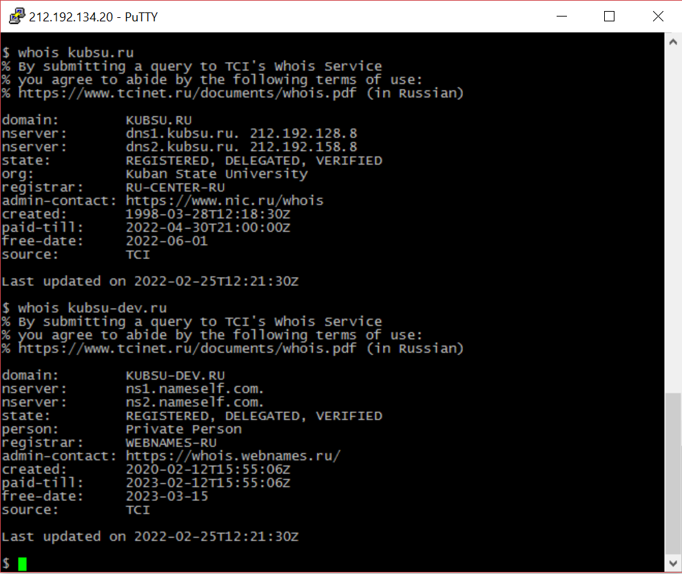
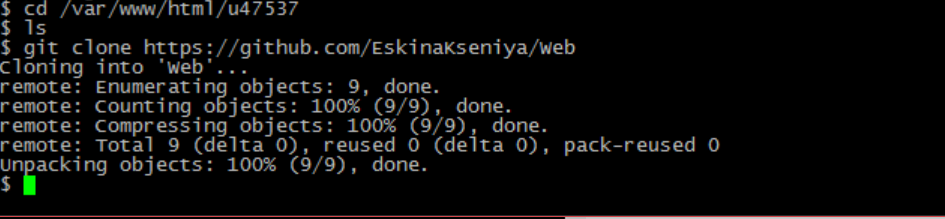
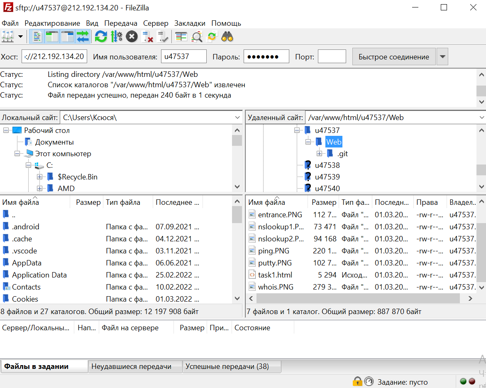

Task one
1) PuTTY позволяет подключиться(установить соединение) и управлять удаленным узлом (например, сервером по протоколу SSH).
В PuTTY реализована только клиентская сторона соединения — сторона отображения, в то время как сама работа выполняется на стороне сервера.

2.Когда возникают ситуации, в которой необходимо определить доступность и работоспособность сервера в интернете, в этот случае помагает команда "ping".
Ее использование позволяет проверить качество соединения с узлом (например, с компьютером, мобильным телефоном или же со специальным сетевым устройством, таким как маршрутизатор, роутер) на уровне IP.
Это простая команда, но очень часто именно она позволяет определить наличие той или иной неполадки(напрмер, работает ли сервер, есть ли связь со сервером).
Вызов команды "ping" отправляет пакеты по протоколу ICMP(англ. Internet Control Message Protocol — протокол межсетевых управляющих сообщений, семейство: TCP/IP)
на выбранный сервер для проверки качества соединения с ним. IP сервера kubsu.ru 212.192.128.92
В приведенном ниже диалоге сначала тестируется хост kubsu.ru. Затем отсылается последовательность из 11 сообщений, содержащих по 64 октета каждое.
Справа приводятся сведения о пути туда и обратно.


3.Утилита NSLOOKUP позволяет через командную строку узнать содержимое DNS. (DNS ― это центральный элемент интернет-системы.
DNS соединяет IP-адрес с доменным именем, которое ему соответствует.
Достаточно ввести домен в поисковую строку и браузер автоматически преобразует его в IP-адрес.) Однако посмотреть DNS может не только браузер.
Любой пользователь может получить информацию о записях через сервис Whois или через NSLOOKUP. Утилита NSLOOKUP поможет узнать:
- узнать IP-адрес,
- узнать A, NS(nameserver), SOA(Start of Authority), MX-записи для домена.
На фото показано поиск IP-адресов доменов: kubsu.ru и kubsu-dev.ru с помощью их A-записи. Таким образом, А-запись позволяет найти IP-адрес.


4. whois -сетевой протокол, базирующийся на протоколе TCP.
Его основное предназначение – получение в текстовом виде регистрационных данных о владельцах IP адресов и доменных имен (главным образом, их контактной информации).
Вывод информации о домене и его владельце: н-записи (домен и IP-адрес), статус, регистратор, контакты владельца, дата создания и время доступа.
Дата регистрации домена kubsu.ru - 28.03.1998
Дата регистрации домена kubsu-dev.ru - 12.02.2020

5. Клонирование репозитория из GitHub на сервер командой git clone

6. FTP (протокол передачи данных по сети) соединение через программу FileZilla. Копирование файлов находящихся на сервере на локальный компьютер
